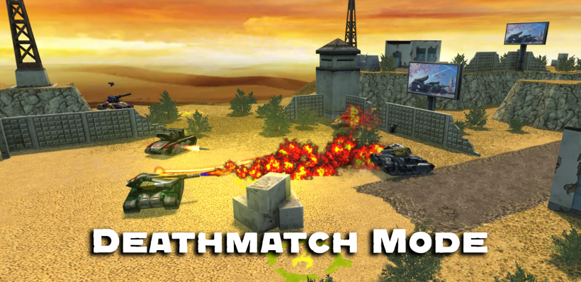
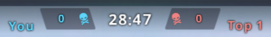
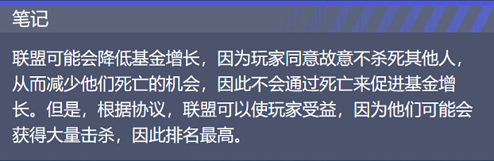

概括
死亡混战模式是游戏中最古老的战斗模式。它是一种充满战略思维的动态和高强度的游戏模式。
在盈利能力和战术上，它不同于《互夺军旗》、《控制点》等其他形式，但绝不逊色。
目标是在分配的时间内摧毁最多数量的坦克。
与团队战斗模式不同，在这里，您只能依靠自己的技能。
一些玩家可能会建立临时联盟，通常说“和平”或“团队”
但要小心，因为任何事情都会发生在死亡混战中——包括背叛。
注意! 此模式仅在 PRO 战斗中可用，并且从配对中永久删除。
但是，它有时会在特殊假期返回匹配。
描述
在死亡混战模式中，与团队对战模式不同，一切都取决于您。
战斗奖励的提高速度比互夺军旗和团队对战快很多，因为你不需要去某个位置寻找敌人；
他们无处不在。在大多数地图上，您可以直接从重生点开火。
就获得水晶而言，死亡混战是最简单、最可靠的战斗模式。
战斗可以受到时间或击杀次数的限制。
指示器

死亡混战计分器
计分器显示您击杀数和第一名的击杀数
非官方联盟
死亡混战是唯一允许玩家（敌人）之间结盟而不受惩罚的游戏模式。
在任何其他游戏模式中，您都不允许故意不杀死敌人，因为您将因破坏而受到惩罚。
组建联盟的最简单方法就是询问其他玩家（通过昵称来称呼他们）是否愿意与您“组队”。
请记住，这些联盟应该是相互的，除非其他油轮接受您的提议，否则协议不会得到确认。
此外，请注意，这些联盟不是官方的，你相信其他玩家的话——规则仍然允许他们杀了你。
与其他玩家组成一个“团队”是很有用的，这样可以让你在不被杀死的情况下获得最大的生存机会。
如果你和一群已经结盟的队友呆在同一个地方，你可以有效地杀死成群的敌人，
同时有共同的防御，从而降低死亡的几率。建议优先选择表现不错或者装备不错的玩家。

有趣的事实
每次击杀获得玩家 40 XP 和 10 点的战斗分数。
自毁会降低玩家的战斗分数10点，而获得的经验值不受影响。
如果发生稳定数量的杀戮，该基金将快速且持续地增长。
根据游戏规则，玩家之间的非官方联盟是突出的并且是允许的。
有一段时间，玩家可以参加死亡混战锦标赛来赢得大量水晶，
但在要求支付水晶进入的要求被证明不受欢迎后，此功能被删除。
死亡混战已于 2019 年 12 月 20 日从外服匹配中移除
死亡混战已于 2020 年 4 月 4 日从国服匹配中移除